رؤية أوضح للعمل
رتّب المواقع والمدربين والبرامج والاشتراكات ضمن مسار تشغيلي واحد، وراجع النتائج من مصدرها.
 الأكاديميات / قطرACADEMY MANAGEMENT EXPERIENCE
الأكاديميات / قطرACADEMY MANAGEMENT EXPERIENCEمن أول تسجيل دخول إلى أول حصة وتحصيل
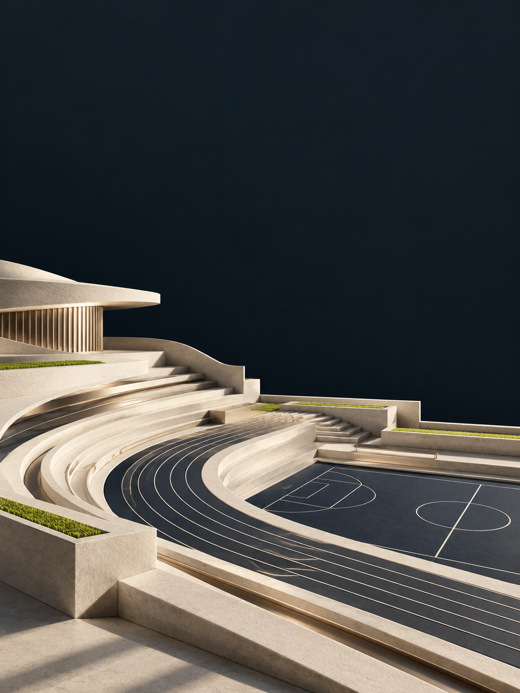
منظور الإدارة ودليل التشغيل
لوحة الشركاء وتطبيقات Hagzz
الأكاديميات / قطرACADEMY MANAGEMENT EXPERIENCEإلى مالك الأكاديمية ومسؤول التشغيل
موعد واضح. تسجيل دقيق. تحصيل مفهوم. ومعلومة تجدها عندما تحتاج إليها. صُمم هذا الدليل ليساعد فريقك على بناء هذه التجربة، خطوة بخطوة.
رتّب المواقع والمدربين والبرامج والاشتراكات ضمن مسار تشغيلي واحد، وراجع النتائج من مصدرها.
كل موظف بحسابه وصلاحياته. خطوات يمكن الرجوع إليها عند بدء العمل أو انضمام عضو جديد.
بيانات لاعب دقيقة، ومواعيد واضحة، وحساب مستقل لولي الأمر في Hagzz Partner بعد تفعيله.
اقرأ رحلة التشغيل مرة واحدة، ثم استخدم الصفحات المصوّرة مرجعًا للفريق. ابدأ بتجربة تشغيل على حساب مخصص قبل دعوة العملاء.
الأكاديميات / قطرACADEMY MANAGEMENT EXPERIENCEلوحة قيادة تربط الأرقام بخطوة عمل، لا بمجرد تقرير.
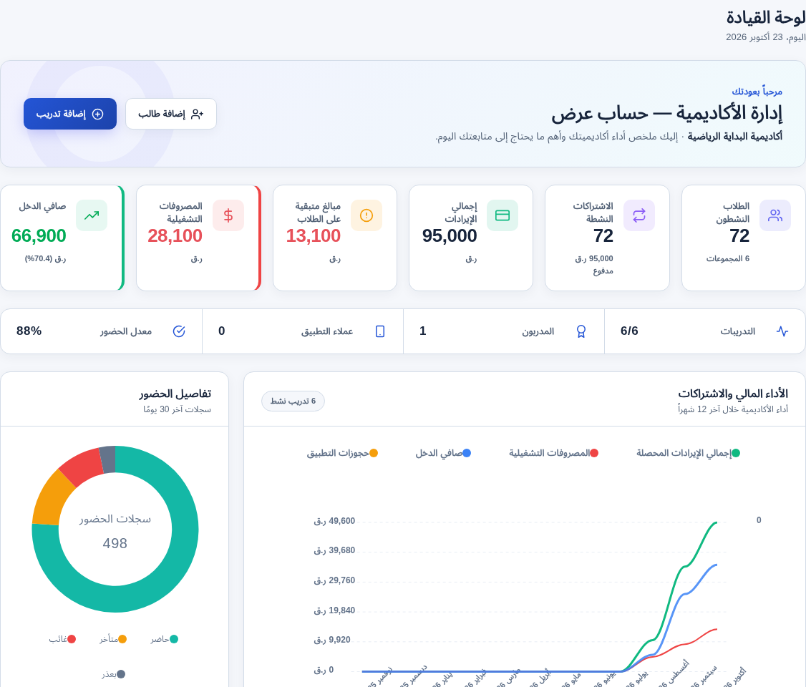
التشغيل: 72 لاعبًا نشطًا في 6 مجموعات. المتابعة: حضور 88% في السجلات المعروضة. التحصيل: 13,100 ر.ق متبقية تستحق المتابعة.
جميع الأرقام في هذا العرض بيانات تشغيلية توضيحية أُدخلت في نسخة محلية لأكاديمية التصوير، وليست نتائج عميل حقيقي. بطاقات الإجماليات تراكمية؛ كل رسم يوضح نطاقه الزمني.
الأكاديميات / قطرACADEMY MANAGEMENT EXPERIENCEالأداء المالي / من حركة الاشتراكات إلى قراءة الشهر
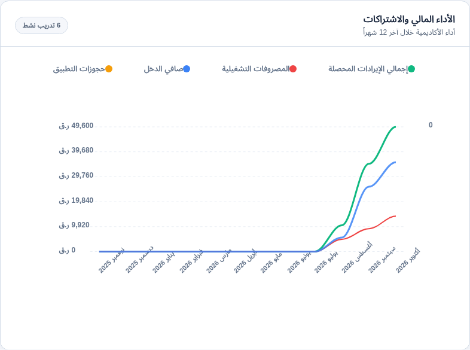
في أكتوبر حتى يوم 23: المحصل 49,600 ر.ق والمصروفات 14,100 ر.ق؛ الفارق النقدي المسجل 35,500 ر.ق. يعرض الرسم المقارنة مع الأشهر السابقة.
الخطوة التاليةراجع أسباب تغير التحصيل والمصروفات قبل التوسع أو إضافة التزامات جديدة.
الأكاديميات / قطرACADEMY MANAGEMENT EXPERIENCEالتسجيل والبرامج / توزيع الاشتراكات النشطة
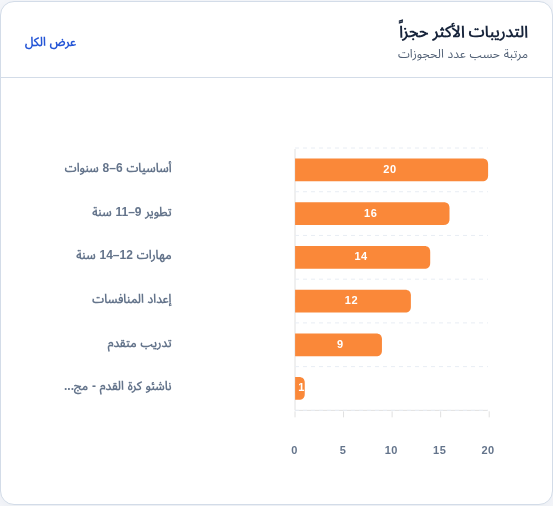
المجموعة الأولى تضم 20 اشتراكًا نشطًا، مقابل 9 للمجموعة المتقدمة. الرسم في هذا المثال مبني على اشتراكات المجموعات، رغم عنوان الواجهة العام عن الحجوزات.
الخطوة التاليةراجع سعة المجموعة والمدرب والتوقيت قبل فتح مجموعة إضافية. قارن المجموعات المتقاربة في الفئة والهدف.
الأكاديميات / قطرACADEMY MANAGEMENT EXPERIENCEالاشتراكات والتحصيل / قراءة الالتزام المالي
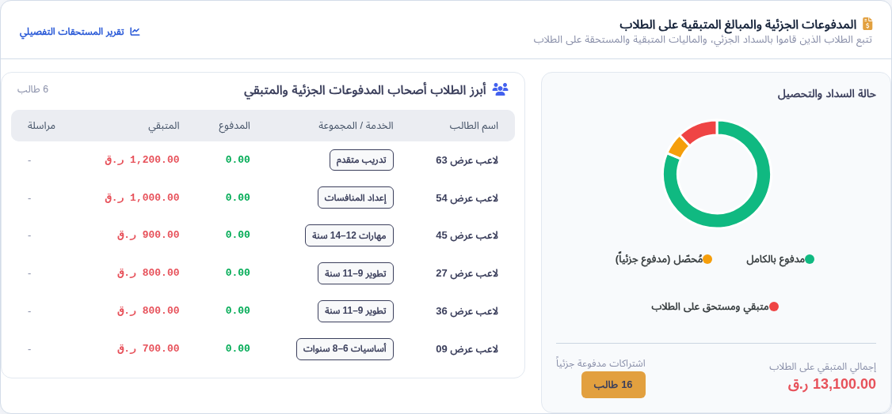
تفرّق اللوحة بين الاشتراكات المسددة، والتحصيل الجزئي، والمبالغ التي ما زالت مستحقة. في المثال يبلغ الرصيد المتبقي 13,100 ر.ق.
الخطوة التاليةافتح التفاصيل، وحدد مرجع الاشتراك وآخر دفعة، ثم تواصل مع ولي الأمر بمعلومة موثقة.
الأكاديميات / قطرACADEMY MANAGEMENT EXPERIENCEالتشغيل اليومي / انتظام اللاعبين داخل المجموعات
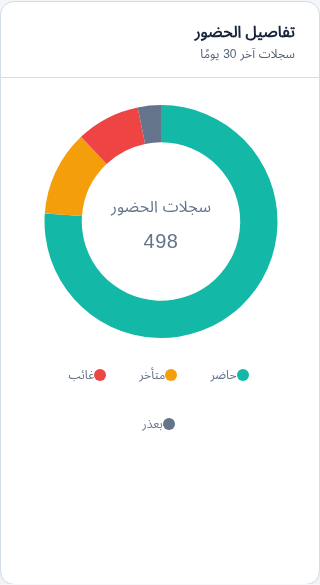
من 498 حالة حضور مسجلة، توجد 438 حالة حاضر أو متأخر؛ لذلك يظهر المعدل 88%. هذه حالات حضور عبر حصص متعددة، وليست 498 لاعبًا مختلفًا.
الخطوة التاليةراجع الغياب والتأخر على مستوى اللاعب والمجموعة، ثم اتفق مع المدرب وولي الأمر على المتابعة.
الأكاديميات / قطرACADEMY MANAGEMENT EXPERIENCEالاحتفاظ باللاعبين / متابعة الاستحقاقات القادمة
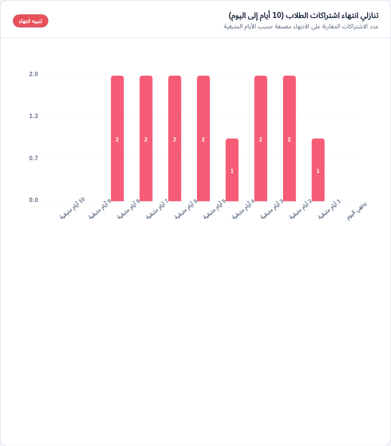
يوضح الرسم عدد الاشتراكات النشطة التي تنتهي خلال الأيام العشرة القادمة. يوجد في المثال 14 اشتراكًا موزعًا على الأيام المتبقية.
الخطوة التاليةابدأ بالأقرب انتهاءً، وراجع رغبة الاستمرار والجدول والسداد قبل إنشاء تجديد جديد.
الأكاديميات / قطرACADEMY MANAGEMENT EXPERIENCEالرقابة التشغيلية / توزيع المصروفات المسجلة
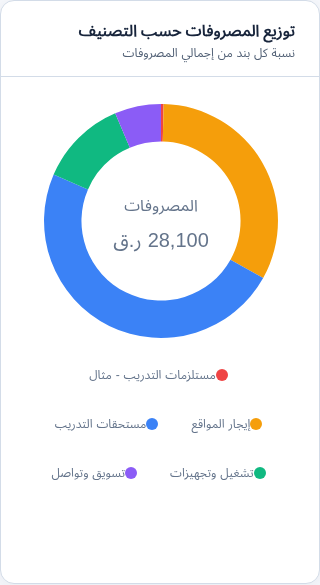
تظهر تكلفة المواقع والتدريب والتجهيزات والتواصل كبنود منفصلة. يبلغ مجموع المصروفات التراكمية في المثال 28,100 ر.ق، منها 14,100 خلال أكتوبر.
الخطوة التاليةراجع البند الأكبر وتفاصيله وفترته، وميّز المصروف الفعلي عن التزام لم يُسدّد بعد.
الأكاديميات / قطرACADEMY MANAGEMENT EXPERIENCEالتحصيل / توزيع وسائل الدفع في قطر
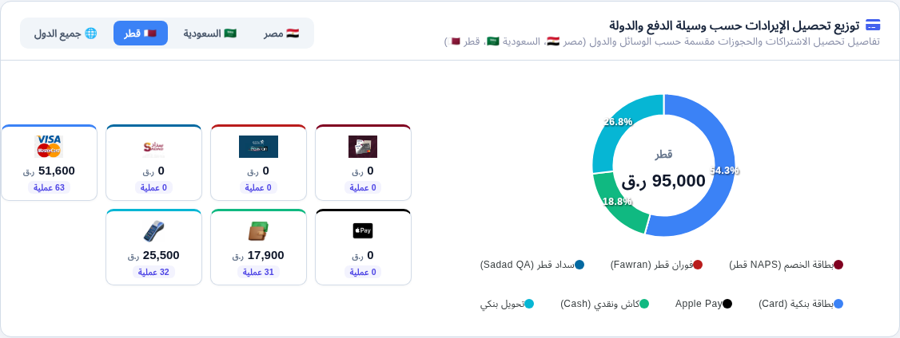
يعرض الرسم توزيع التحصيل حسب الوسيلة؛ أصبح التحويل البنكي ظاهرًا ضمن وسائل قطر، وتطابق مجموع الوسائل مع التحصيل المسجل: 95,000 ر.ق.
الخطوة التاليةطابق مرجع كل دفعة مع وسيلتها، وراجع التقارير قبل تسوية النقد أو التحويلات.
الأكاديميات / قطرACADEMY MANAGEMENT EXPERIENCEاختر التطبيق والحساب المناسبين قبل البدء.
المساحة الأساسية لإعداد الأكاديمية وإدارة البرامج واللاعبين والاشتراكات والتحصيل.
حساب مخصص للمالك لإدارة ومتابعة الأكاديمية من التطبيق، بحسب ما يتاح لحسابه.
حساب مستقل عن المالك. يُفعّل المسار الخاص بولي الأمر بالتنسيق مع الأكاديمية لمتابعة ما يُتاح له من بيانات.
التطبيق المخصص لاكتشاف الأكاديميات واختيار التدريبات ومراجعة تفاصيلها وإجراءات التسجيل المتاحة.
لا يستخدم ولي الأمر بيانات دخول المالك. كما أن حساب تطبيق العملاء لا يُفترض أنه يمنح تلقائيًا دخولًا إلى Hagzz Partner. اطلب تفعيل الحساب الصحيح وربط بيانات اللاعب عبر الأكاديمية عند الحاجة.
الأكاديميات / قطرACADEMY MANAGEMENT EXPERIENCEخطوة 02 / القائمة مرتّبة حسب مراحل العمل
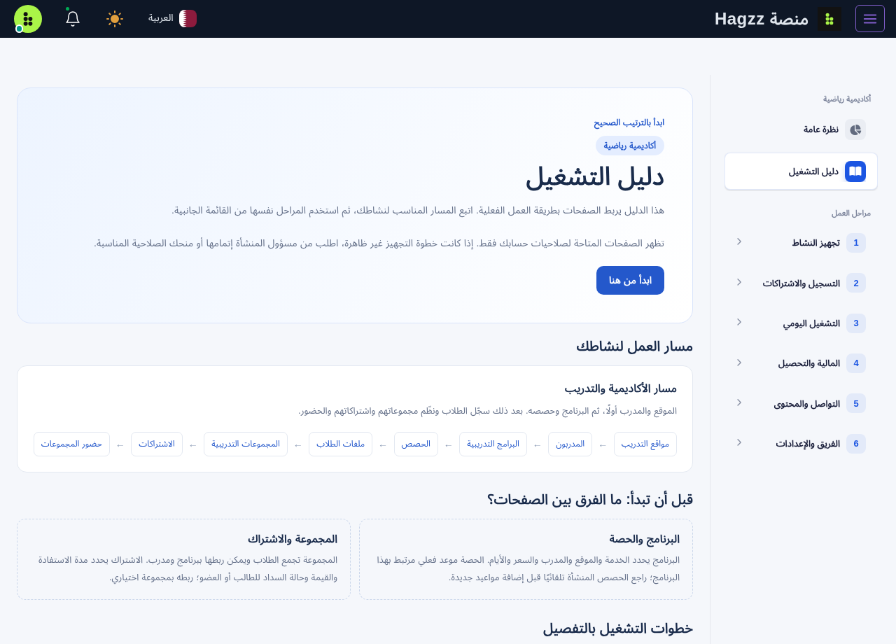
الأكاديميات / قطرACADEMY MANAGEMENT EXPERIENCEمسار المالك والإدارة / إعداد الوصول
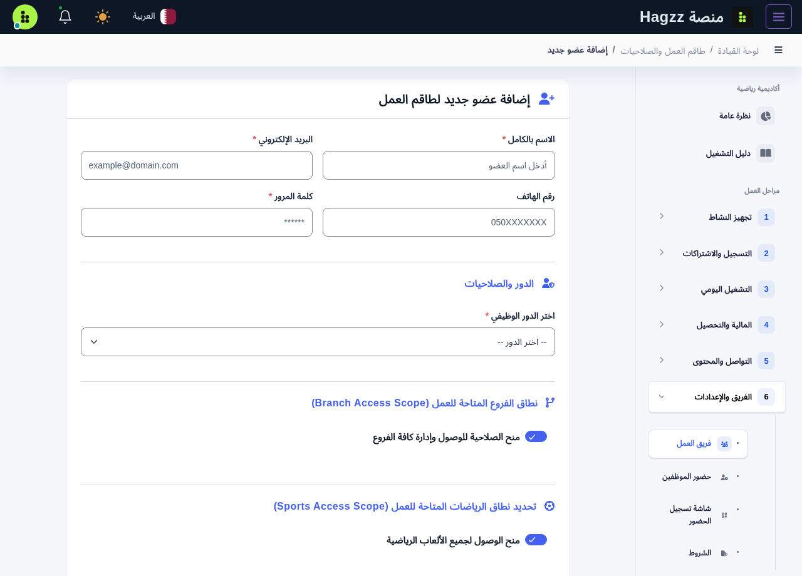
الأكاديميات / قطرACADEMY MANAGEMENT EXPERIENCEHagzz Partner / حساب ولي الأمر
زود الأكاديمية باسم اللاعب ورقم تواصلك الصحيح، واطلب حساب ولي الأمر المخصص لك. لا ترسل رمز التحقق لأي شخص.
بعد الدخول تأكد من أنك ترى الأكاديمية واللاعب الصحيحين في البيانات التي تظهر لحسابك. إذا لم يظهر الربط، تواصل مع التسجيل.
اطلع على المواعيد أو الاشتراكات أو المتابعة التي تعرضها نسختك وحسابك. لا تفترض ظهور كل بيانات لوحة الإدارة.
عند اختلاف موعد أو رصيد، ارجع إلى الأكاديمية وقدم مرجع الاشتراك أو الإيصال. لا تنشئ ملف لاعب جديدًا لمعالجة اختلاف العرض.
الأكاديميات / قطرACADEMY MANAGEMENT EXPERIENCEمسار اللاعب وولي الأمر / البحث والمراجعة
راجع الاسم والموقع والرياضة، وتأكد أنك اخترت الفرع الصحيح داخل قطر.
اقرأ العمر والمستوى والمواعيد والسعر وما يشمله، إذا كانت منشورة. استفسر من الأكاديمية عند غياب معلومة.
إذا ظهر وسم «تجريبي» أو «غير قابل للحجز»، فالبيانات للعرض فقط. لا تعتبرها عرضًا مؤكدًا أو تدفع بناءً عليها.
استخدم إجراء الحجز أو الدفع فقط عندما يكون متاحًا فعليًا للبرنامج. راجع تأكيد العملية ومرجعها، ولا تفترض توفر الحجز لكل عنصر.
الأكاديميات / قطرACADEMY MANAGEMENT EXPERIENCEنفّذ تجربة كاملة واحدة مع فريق الأكاديمية.
| التحقق | المطلوب قبل الاعتماد |
|---|---|
| □ هوية الأكاديمية | اسم وشعار وبيانات تواصل صحيحة |
| □ الموقع والمدرب | موقع مفعل ومدرب مرتبط بالرياضة |
| □ البرنامج والحصص | سعر وسعة وأيام وتوقيت بلا تعارض |
| □ اللاعب والمجموعة | ملف صحيح وعضوية مجموعة مؤكدة |
| □ الاشتراك والتحصيل | مدة وقيمة ودفعة اختبار مصرح بها ومراجعة الرصيد |
| □ الحضور | جلسة صحيحة وحالة لاعب محفوظة دون تكرار |
| □ صلاحيات الفريق | دخول مستقل واختبار ما يراه كل دور |
| □ تطبيق العملاء | تثبيت من المتجر واختبار تسجيل الدخول والتصفح |
| □ تجربة ولي الأمر | تأكيد الموعد والموقع ووسيلة التواصل مع الأكاديمية |
الأكاديميات / قطرACADEMY MANAGEMENT EXPERIENCEمبادرة من Hagzz وواحة قطر للعلوم والتكنولوجيا
خصومات وشهور مجانية لدعم التحول الرقمي في القطاع الرياضي، دون تمييز بحسب حجم الأكاديمية.
الأسعار الأساسية منشورة في صفحة الباقات. يوضح عرض المنحة الخصم، وعدد الأشهر المجانية، ونطاق الخدمة المعتمد لأكاديميتك.
استعرض الباقات ←عرّف فريقنا بأكاديميتك وطريقة تشغيلها، ثم استلم تفاصيل العرض وخطوات التفعيل وروابط التطبيقات المناسبة.

تحدد مدة الإتاحة ونسبة الخصم والمزايا المشمولة في العرض المعتمد للأكاديمية. هذا الدليل لا يحدد نسبة أو عدد أشهر موحدًا.
الأكاديميات / قطرACADEMY MANAGEMENT EXPERIENCEHagzz / Qatar
تواصل معنا لتحديد احتياج أكاديميتك، والتعرف على تفاصيل المنحة، وترتيب التفعيل والتجربة الأولى مع فريقك.
هذا الجزء مخصص للأكاديميات. أدلة الجيم والمراكز الصحية، ثم الملاعب والمرافق الرياضية، تصدر في أجزاء مستقلة.